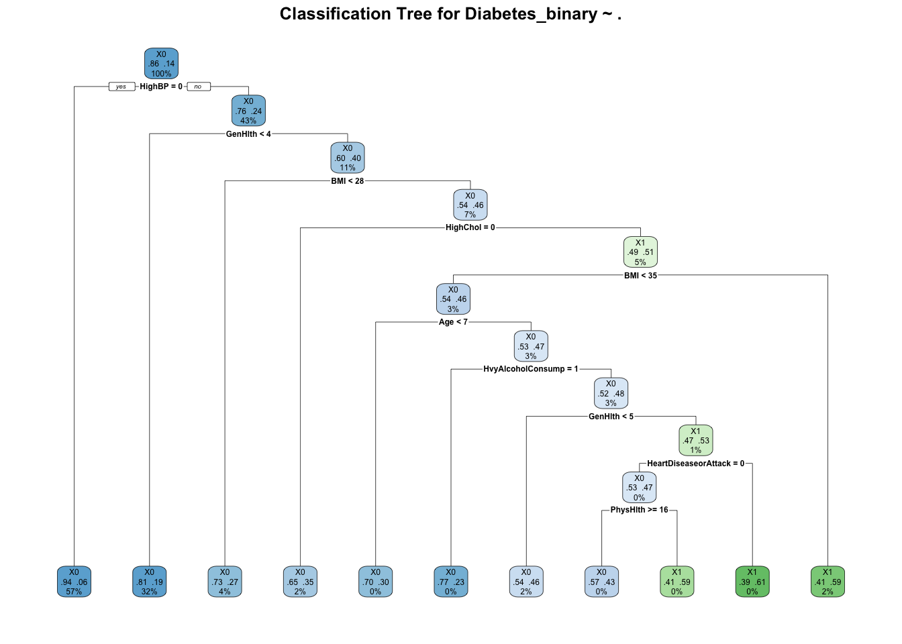
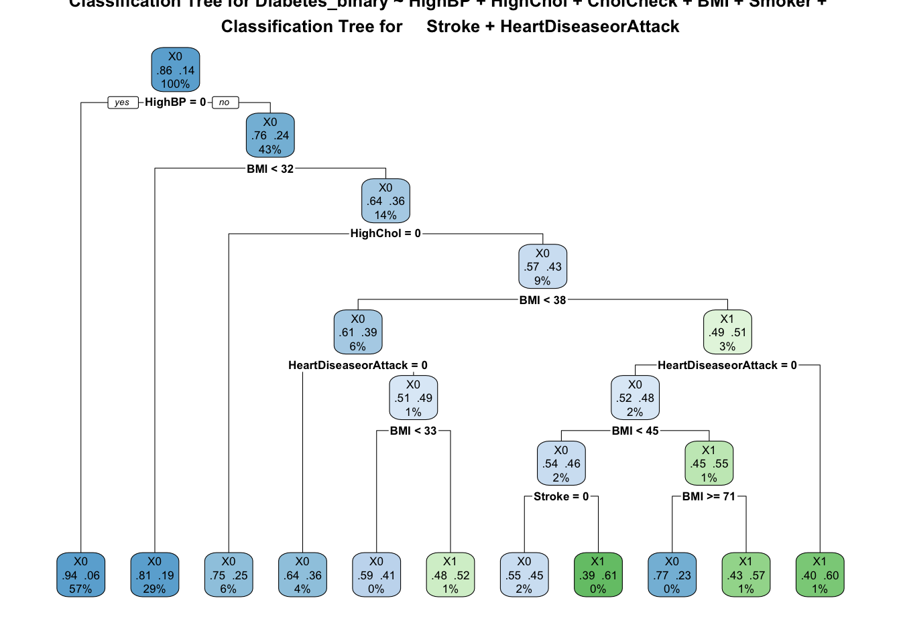
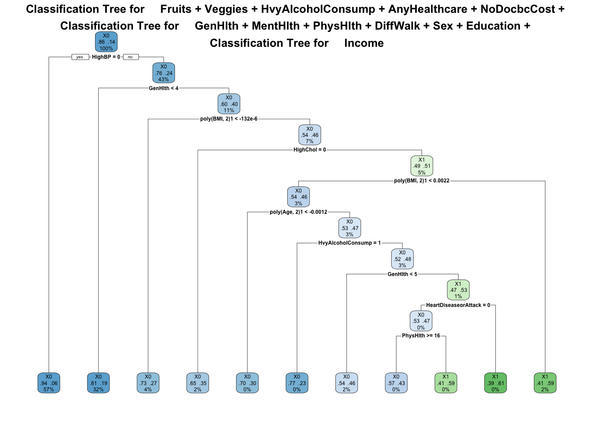

Basic Introduction Start with a basic introduction (feel free to repeat some things from the other file). –
Log loss, also known as logistic loss or cross-entropy loss, is a performance metric used to evaluate the accuracy of a classification model, particularly in binary classification problems. It measures the uncertainty of the predictions made by the model, by comparing the predicted probabilities of the target variable to the actual binary outcomes. Log loss penalizes incorrect predictions more heavily when they are confident but wrong, and it rewards correct predictions that are confident. This makes log loss a more nuanced measure than accuracy, which simply calculates the proportion of correct predictions.
Log loss is particularly useful when dealing with imbalanced datasets, where one class may be significantly more prevalent than the other. In such cases, a model could achieve high accuracy by merely predicting the majority class, but this would not necessarily reflect the model’s true performance in distinguishing between the classes. Log loss addresses this by taking into account the predicted probabilities, ensuring that the model not only predicts the correct class but also assigns a high probability to its predictions. This makes log loss a preferred metric for evaluating models in scenarios where the cost of false positives and false negatives is high, or where we need to understand the confidence of the model’s predictions.
# Load necessary librarieslibrary(caret)
Loading required package: ggplot2
Loading required package: lattice
library(dplyr)
Attaching package: 'dplyr'
The following objects are masked from 'package:stats':
filter, lag
The following objects are masked from 'package:base':
intersect, setdiff, setequal, union
Type rfNews() to see new features/changes/bug fixes.
Attaching package: 'randomForest'
The following object is masked from 'package:dplyr':
combine
The following object is masked from 'package:ggplot2':
margin
library(rpart.plot)
Adjust Factor Levels and Set Up Cross-Validation and Log Loss Metric
# Import the datadiabetes_data <-read_excel("~/Downloads/diabetes_binary_health_indicators_BRFSS2015.xlsm")# Convert Diabetes_binary to a factor with two levelsdiabetes_data$Diabetes_binary <-factor(diabetes_data$Diabetes_binary, levels =c(0, 1))# Ensure that the factor levels have valid R nameslevels(diabetes_data$Diabetes_binary) <-make.names(levels(diabetes_data$Diabetes_binary))# Set seed for reproducibilityset.seed(123)# Split the data into training (70%) and test (30%) setstrainIndex <-createDataPartition(diabetes_data$Diabetes_binary, p =0.7, list =FALSE)trainData <- diabetes_data[trainIndex, ]testData <- diabetes_data[-trainIndex, ]# Define training control with 5-fold cross-validation and log loss as the metrictrain_control <-trainControl(method ="cv", number =5, classProbs =TRUE, summaryFunction = mnLogLoss)
Model 1: Basic logistic regression with no additional features.
# Model 1: Basic Logistic Regressionmodel1 <-train(Diabetes_binary ~ ., data = trainData, method ="glm", family ="binomial",trControl = train_control, metric ="logLoss")
Model 2: Logistic regression with interaction terms.
# Model 2: Logistic Regression with only select few cardiohealth termsformula_interaction <- Diabetes_binary ~ HighBP + HighChol + CholCheck + BMI + Smoker + Stroke + HeartDiseaseorAttack model2 <-train(formula_interaction, data = trainData, method ="glm", family ="binomial",trControl = train_control, metric ="logLoss")
Model 3: Logistic regression with polynomial terms.
# Model 3: Logistic Regression with Polynomial Terms with all termsformula_polynomial <- Diabetes_binary ~poly(BMI, 2) +poly(Age, 2) + HighBP + HighChol + CholCheck + Smoker + Stroke + HeartDiseaseorAttack + PhysActivity + Fruits + Veggies + HvyAlcoholConsump + AnyHealthcare + NoDocbcCost + GenHlth + MentHlth + PhysHlth + DiffWalk + Sex + Education + Incomemodel3 <-train(formula_polynomial, data = trainData, method ="glm", family ="binomial",trControl = train_control, metric ="logLoss")
Compare Models Using Cross-Validation with Log Loss
# Compare Models Using Cross-Validation with Log Lossresamples <-resamples(list(Basic = model1, Interaction = model2, Polynomial = model3))# Extract the mean log loss for each modellog_loss_results <- resamples$values %>%select(Resample, contains("logLoss")) %>%pivot_longer(cols =contains("logLoss"), names_to ="Model", values_to ="LogLoss") %>%group_by(Model) %>%summarize(MeanLogLoss =mean(LogLoss, na.rm =TRUE))# Print the log loss resultsprint(log_loss_results)
# A tibble: 3 × 2
Model MeanLogLoss
<chr> <dbl>
1 Basic~logLoss 0.321
2 Interaction~logLoss 0.343
3 Polynomial~logLoss 0.317
# Determine the best model based on the lowest mean log lossbest_model_name <- log_loss_results %>%filter(MeanLogLoss ==min(MeanLogLoss)) %>%pull(Model)# Remove "~logLoss" from model namesbest_model_name <-gsub("~logLoss", "", best_model_name)# List of models to comparemodels <-list(Basic = model1, Interaction = model2, Polynomial = model3)
The model with the lowest log loss value is generally the best, as it indicates better performance in predicting class probabilities. Here the best performing model is the polynomial model.
Evaluate the Best Model on the Test Set
# Select the best modelbest_model <- models[[best_model_name]]print(best_model)
Generalized Linear Model
177577 samples
21 predictor
2 classes: 'X0', 'X1'
No pre-processing
Resampling: Cross-Validated (5 fold)
Summary of sample sizes: 142061, 142061, 142063, 142062, 142061
Resampling results:
logLoss
0.3165827
# Evaluate the Best Model on the Test Setpredictions <-predict(best_model, newdata = testData, type ="prob")# Calculate log loss on the test set# Adjust the target names if neededactual <-as.numeric(testData$Diabetes_binary) -1log_loss <--mean((actual ==1) *log(predictions[,2]) + (actual ==0) *log(1- predictions[,2]))log_loss
[1] 0.3126407
Classification Tree
A classification tree is a decision tree used for categorizing data into classes. It is a supervised learning model that splits the data into subsets based on the values of input features. The goal is to create a model that predicts the class label of new observations based on the values of their features. The tree structure consists of nodes that represent features, branches that represent decision rules, and leaves that represent the outcome or class label.
How it works: Splitting: At each node in the tree, the data is split based on the feature that best separates the classes. This split is determined by criteria such as Gini impurity, entropy, or information gain. Recursive Partitioning: The splitting process is repeated recursively on each subset of the data until a stopping criterion is met, such as a maximum tree depth, a minimum number of samples per leaf, or an improvement threshold. Pruning: To prevent overfitting, trees are often pruned by removing branches that provide little additional power to classify instances. This is done by setting a complexity parameter that controls the trade-off between tree size and fit to the training data.
Classification tree code here
# Function to create and evaluate classification tree modelscreate_and_evaluate_tree <-function(formula, trainData, testData, cp_values) { results <-data.frame(CP =numeric(), Accuracy =numeric())for (cp in cp_values) { model_tree <-rpart(formula, data = trainData, method ="class", control =rpart.control(minbucket =20, cp = cp))# Predict on the test set predictions <-predict(model_tree, testData, type ="class")# Confusion matrix to evaluate the model conf_matrix <-confusionMatrix(predictions, testData$Diabetes_binary)# Store accuracy accuracy <- conf_matrix$overall['Accuracy'] results <-rbind(results, data.frame(CP = cp, Accuracy = accuracy)) }# Find the best cp based on maximum accuracy best_cp <- results$CP[which.max(results$Accuracy)]print(paste0("Optimal Complexity Parameter: ", best_cp))# Fit the final model using the best cp value final_tree <-rpart(formula, data = trainData, method ="class", control =rpart.control(minbucket =20, cp = best_cp))# Plot the treepar(mar =c(1, 1, 1, 1)) # Adjust margins (bottom, left, top, right)rpart.plot(final_tree, type =2, extra =104, fallen.leaves =TRUE, main =paste("Classification Tree for", deparse(formula)))# Print the final confusion matrix for the best model final_predictions <-predict(final_tree, testData, type ="class") final_conf_matrix <-confusionMatrix(final_predictions, testData$Diabetes_binary)print(final_conf_matrix)return(final_tree)}# Define complexity parameter values to trycp_values <-seq(0.000, 0.004, by =0.001)# Model 1 Treeset.seed(13579)formula1 <- Diabetes_binary ~ .tree1 <-create_and_evaluate_tree(formula1, trainData, testData, cp_values)
[1] "Optimal Complexity Parameter: 0.001"

Confusion Matrix and Statistics
Reference
Prediction X0 X1
X0 64696 9379
X1 804 1224
Accuracy : 0.8662
95% CI : (0.8638, 0.8686)
No Information Rate : 0.8607
P-Value [Acc > NIR] : 5.056e-06
Kappa : 0.1561
Mcnemar's Test P-Value : < 2.2e-16
Sensitivity : 0.9877
Specificity : 0.1154
Pos Pred Value : 0.8734
Neg Pred Value : 0.6036
Prevalence : 0.8607
Detection Rate : 0.8501
Detection Prevalence : 0.9734
Balanced Accuracy : 0.5516
'Positive' Class : X0
# Model 2 Treeset.seed(13579)tree2 <-create_and_evaluate_tree(formula_interaction, trainData, testData, cp_values)
[1] "Optimal Complexity Parameter: 0.001"

Confusion Matrix and Statistics
Reference
Prediction X0 X1
X0 64751 9640
X1 749 963
Accuracy : 0.8635
95% CI : (0.861, 0.8659)
No Information Rate : 0.8607
P-Value [Acc > NIR] : 0.01255
Kappa : 0.1224
Mcnemar's Test P-Value : < 2e-16
Sensitivity : 0.98856
Specificity : 0.09082
Pos Pred Value : 0.87041
Neg Pred Value : 0.56250
Prevalence : 0.86068
Detection Rate : 0.85083
Detection Prevalence : 0.97750
Balanced Accuracy : 0.53969
'Positive' Class : X0
# Model 3 Treeset.seed(13579)tree3 <-create_and_evaluate_tree(formula_polynomial, trainData, testData, cp_values)
[1] "Optimal Complexity Parameter: 0.001"

Confusion Matrix and Statistics
Reference
Prediction X0 X1
X0 64696 9379
X1 804 1224
Accuracy : 0.8662
95% CI : (0.8638, 0.8686)
No Information Rate : 0.8607
P-Value [Acc > NIR] : 5.056e-06
Kappa : 0.1561
Mcnemar's Test P-Value : < 2.2e-16
Sensitivity : 0.9877
Specificity : 0.1154
Pos Pred Value : 0.8734
Neg Pred Value : 0.6036
Prevalence : 0.8607
Detection Rate : 0.8501
Detection Prevalence : 0.9734
Balanced Accuracy : 0.5516
'Positive' Class : X0